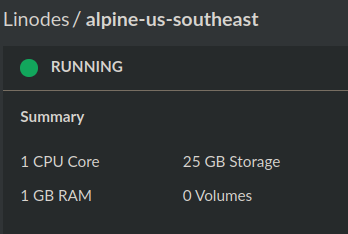
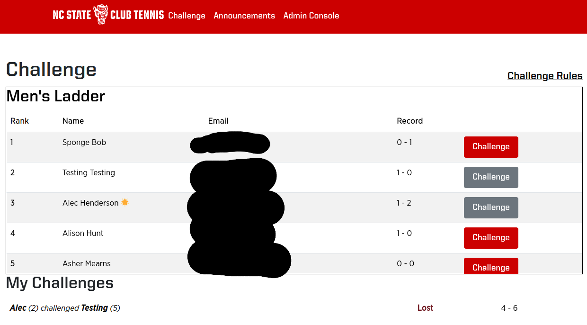
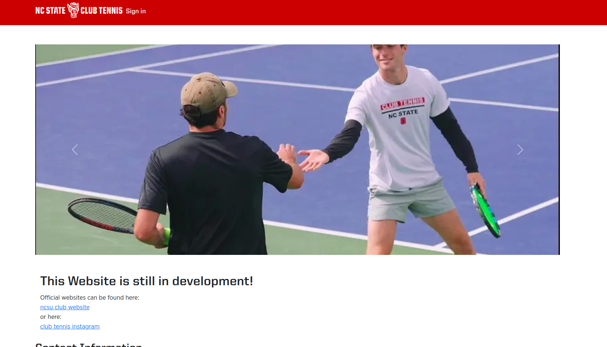
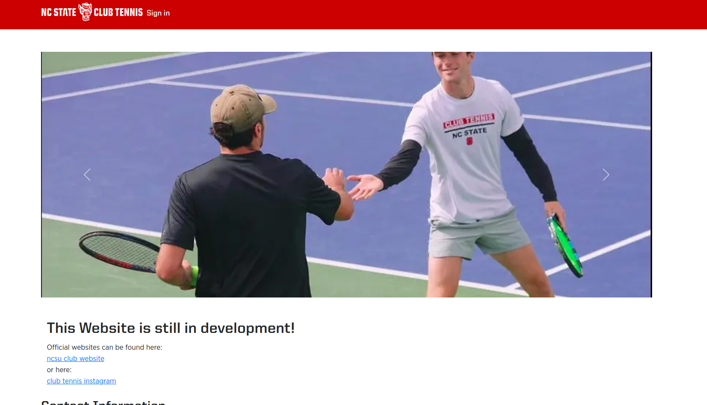

Tennis Club Webserver
Over summer 2024 I spent a good chunk of my time working on a webserver for the NC State Tennis Club. The backend is written entirely in Go using Gin, GORM, and other libraries for emails, image compression, etc. and the frontend uses AngularJS, JQuery, and Bootstrap.
This was definately my most ambitious project. I had a lot of ideas for what the site could do, and I had to do it all on a single core, 1GB RAM, 25GB storage cloud computer (ie. the cheapest one I could find).

Tech overview
My server's API and static files are handled by Go and Gin. The database is a MySQL database and ORM is handled with GORM. I use docker compose to run images of MySQL, my server, and Caddy, which is a webserver that I use as a reverse proxy so that I can have HTTPS. Session management is handled with JWTs and my own in-memory database backed by an RB Tree (I previously used Redis, but this was canned for various reasons). I do not do my own user authentication, rather, I rely on Google Oauth SSO to authenticate my users and return their email, which I use to issue tokens once authenticated.
The server itself is hosted on the cheapest Linode VM, running Alpine Linux. I have several cronjobs for site maitnence, including one job that perpetually checks Github for updates to the codebase, and automatically builds and scales docker compose to allow for zero downtime continuous deployment (though I'll admit, my VM is so slow during these builds that the site may as well be down). I also created an OpenRC service to start the docker compose on startup, so reboots do not require any fiddling with the site.
The Ladder
The first thing I had to get sorted out, and the main reason I started this project, was the competitive ladder. You see, our ladder used to be a spreadsheet where you would challenge someone over email, and once the challenge was complete you would have to email the club so that they could adjust your position. You also have to be careful to only challenge people you are "allowed" to challenge, which has several rules involving rank range, re-challenges, etc. My friend Asher went on a challenging streak near the end of the year, and his biggest complaint was that he had to wait for the admins to update the ladder so that he could re-challenge someone higher. This complaint made me think of how the ladder updating process could be automated, which put into motion several other ideas for how I could improve the club's online experience.
The updated ladder features a table of all users in your ladder with a "challenge" button that is greyed out if you cannot challenge a user for any reason. Issuing a challenge will create a match record in the database, as well as send emails to the challenger and challenged player as reciept and notification respectively. Once concluded, either player can submit the final score on the site homepage and the record is updated immediately.
notice how I cannot challenge myself, and I cannot challenge Testing because I have already challenged him.

The email you recieve when challenged. Replying to the email will reply to the challenger, not the email service
Announcements
Club admins frequently post announcements in the form of mass emails to users. This is not inherently terrible, but I saw some room for improvement. I recall one day where it was sprinkling outside and I was searching through my inbox, spam, trash, etc. to see if I had missed a cancellation email. I decided to implement an announcement feed, where admins can post things like tournament signups and rain alerts, and are given the option to email the announcement to everyone in the club. I figured making the email optional invites sillier uses of the announcement page without blowing up members' inboxes.
Emails (both for announcements and challenge emails) use my own proprietary templating where things like names, email addresses, or announcement bodies are named fields enclosed in &%your_field%&. A simple regex parser + map replaces populates the templates in runtime.

The announcement on my website

The announcement in an email. This was a pain to refactor when I learned Gmail doesn't allow custome CSS or webfonts.
Home Page
The home page we used to have isn't great. The pictures on the site are from ten years ago and the content is not well-formatted and was always outdated. My improved page allows the non-tech-savvy to easily update the message on the homepage as well as change the pictures in the slideshow.
 

Problems and Optimizations
I had a lot of problems regarding speed and efficency, especially when it came to supporting user-uploaded content. This section is for all of the optimizations I had to make and how I did it.
Emails
If you didn't know already, Gmail is very strict about email size and fonts. My school uses gmail for handling emails, so I was forced to keep emails under 100kb and not use any custom fonts. Stripping fonts and inlining styles was easy enough thanks to my templating, but images were more difficult.
My WYSIWYG editor uploads user images and embeds it directly into the converted HTML using base64. This is not immediately an issue, but emailing an announcement with a 200kb picture embedded will cause gmail to truncate the email and ruin it. What I had to do was extend my templating code to strip base64 from announcements and store the raw image binary in the database. I replace the embedded image with a link to the image in the database, which is the raw binary's md5 checksum plus a file extension. This allows me to replace embedded images with links, which saves a lot of space in emails, and allows parallel fetches from browsers.
Home Page
The homepage slideshow was originally stored in it's own database table, and all the slides were returned with a call to /slides. After running a performance test on my homepage, I realized that my slides were taking almost 500ms to load in some cases. This was for two main reasons: My entire slideshow was returned with one call to /slides, and my slides themselves were not optimized for space.
This was a huge problem because I knew my site was going to be hammered with requests during the university's recfest, where all the athletic clubs recruit new members.
I solved this problem by allowing slides to be uploaded as static files instead of database blobs, and used a compression library to convert uploaded content to compressed webp. This allows parallel fetches of smaller files, drastically improving homepage performance.
Docker Container Leak
I was preparing for a tech demo on the first day back in school when I realized none of my requests dealing with data would go through. After troubleshooting online proved futile, I ssh'd into the cloud computer to be greeted with this error message:
mkdtemp: private socket dir: No space left on deviceUh oh! I'm out of storage!
This was unexpected. My first thought was that a log file had grown too large and was causing my system to misbehave. I had written some scripts to delete log files after a week, but I was pretty new to BASH so perhaps I had made a mistake. I checked the size of my project directory, but alas, the size was under a gigabyte.
I then ran the command "$ sudo du -ah / | sort -rh | head -n 20" to see that /var/lib/docker was a whopping 22G on my system. With only 25G to work with, this was completely unacceptable.
Inspecting the docker directory revealed dozens of docker layers that were built but unused. I had found my culprit. A quick fix was for me to use "docker system prune -a" instead of "docker images prune" in my cleanup script. My original command only deleted images when in reality I needed to delete images, containers, and networks.